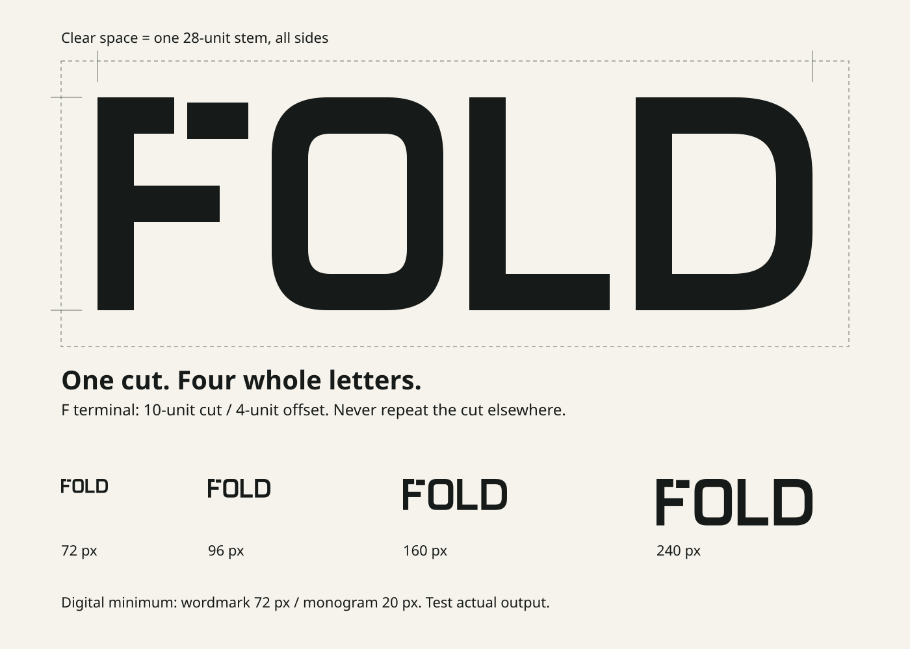
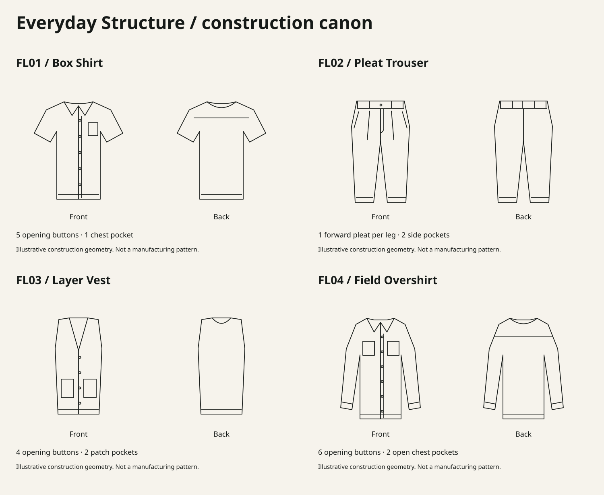

Clothes that give
your day room.
Fold Clothing is an authored studio concept for an everyday capsule. Useful silhouettes, considered construction and clear choices guide the identity and shopping experience.
Digital identity and packaging artwork. Product compositions, prices, stock and care text are fictional design fixtures. No physical manufacture, sourcing or commercial launch is established.
The signature
Four compact letters. One cut in the upper arm of the F. The displaced terminal refers to a piece aligned for construction. Repeat the original vector unchanged.
Use FOLD as the signature and Fold Clothing in written language. Preserve the Latin mark in Arabic layouts. The F monogram reuses exactly the same path on narrow labels.
Clear space: one 28-unit stem on all sides. Digital minimum: 72 px wordmark, 20 px monogram. These are screen rules; physical output needs proofing.

Colour and type
Archivo for editorial language.
DM Sans for information, prices and decisions. Use real local font files, 400–700 variable weights. Open letters, clear hierarchy, square edges. The signature is a drawing, not typeset Archivo.
مساحة للحركة. ووضوح في الاختيار.
IBM Plex Sans Arabic supplies Arabic shaping in 400 and 600. Arabic uses no tracking; Latin brand, SKU and measurement strings retain readable direction.
| Pair | Contrast | Role |
|---|---|---|
| Ink / Ivory | 15.86:1 | Body, controls |
| Ink / Citrine | 13.98:1 | Selected state |
| Slate / Ivory | 4.75:1 | Full-opacity support text |
| Ivory / Olive | 8.46:1 | Dark panel text |
| Mist / Ivory | 1.25:1 | Decoration only |
Digital HEX values. Print colour depends on stock, inks and actual proofing.
A line with a purpose
A solid line establishes an edge. A limited dashed line distinguishes an illustrative fold or comparison. Short ticks mark alignment. FL01–FL04 identify garment records. This is a restrained graphic language; it never impersonates manufacturing dimensions.

Information that travels with the garment
The signature stays consistent from hangtag to narrow label and mailer. Sample composition, price, SKU and size follow the same product record. Care text is illustrative and requires fabric testing before production. No origin, certification or sourcing statement is invented.


One collection. Clear decisions.

Collection 01: Everyday Structure
Box Shirt · Pleat Trouser · Layer Vest · Field Overshirt. Four products and eight colour variants. Measurements are laid-flat garment measurements; chest and waist are half-widths, not body circumferences.
“A straight leg. Room through the thigh.” Concrete observations keep product language useful. No unsupported durability, sustainability or fit-test claim.
Editable handoff
SVG signature/monogram variants, clear-space tests, construction diagrams, packaging layouts, this HTML guide, two editable presentation boards, source builder and local licensed fonts are supplied.
The OFL licences in the font folder travel with the source files. Name clearance, print proofing, fit tests, production care and commercial policies remain unresolved.
Fold Clothing / Self-initiated studio project / Digital design system, 15 October 2026. Store behavior and integration status are established by the separate production and verification evidence.